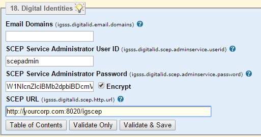
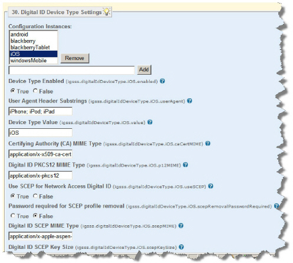

|
IdentityGuard Server 12.0 Administration Guide |
|
IdentityGuard Server 12.0 Administration Guide |
Complete the steps below to configure Self-Service properties. These define your email domain (necessary for secure email digital IDs), and your SCEP settings (if you are using SCEP), among others.
There are two procedures in this section; both must be completed.
To configure general digital ID properties
1. Open the Self-Service Configuration interface (available from the Start menu on Windows, or by entering https://<SSM_host>:8446/IdentityGuardSelfServiceConfig in a browser). For details, see the Entrust IdentityGuard Self-Service Module Installation and Configuration Guide.
2. From the menu at the top, click Properties.
3. From the table of contents, click Digital Identities (near the bottom).
4. Fill out the section. Click next to the property for a description of it. If you require more details, see the Self-Service Module Installation and Configuration Guide.
Your page looks similar to the following:

5. Click Validate & Save. Leave the interface open and go to the next procedure.
To configure digital ID device type settings (specifying SCEP for network access digital IDs)
1. Still in the Self-Service Module Configuration interface, click Properties (at the top).
2. From the table of contents, select Digital ID Device Type Settings (at the bottom).
3. Fill out the section. Mostly, you can leave the defaults. The interesting properties are:
● Use SCEP for Network Access Digital ID—set this one if you are using SCEP network digital IDs. If you created a digital ID configuration using the Mobile Enrollment for iOS Network Access using P12 template (Step 3mobileenroll), set this property to False. See Digital ID types and formats for details.
● Password required for SCEP profile removal—set this one if you are using SCEP digital IDs, and you want users to enter a previously-specified password before they can remove their digital ID from their device. Users define this password when they enroll for their digital ID through Self-Service.
Click next to the property for a description of it. If you require more details, see the Self-Service Module Installation and Configuration Guide.
Your page looks similar to the following:

4. Click Validate & Save.
Leave the Configuration interface open and go to the next procedure.